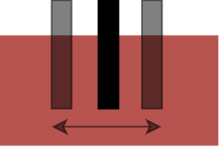

A. Impact of Grasp as Manipulation Primitive
Tasks like lift and grasp-and-return show reasonable long-context performance even in the low data regime (N/2). We speculate that this is because these tasks involve locally stable manipulation primitives, and policies can perform well despite errors in manipulation.

To support our claim, we study how well a long-context policy learned to grasp for the grasp-and-return task in the N data regime. We examine the grasping skill learned by comparing the location where the gripper makes contact with the brick relative to the center of the brick. Training data has the gripper making contact at the center of the brick (we can control for this as the data is synthetically generated with a heuristic method). We show the mean and median absolute value of gripper contact location with respect to the center of the brick at inference time in Table 1. Despite having errors of more than 1 cm, the task shows success at long contexts. This shows that for tasks where it is possible to succeed even with significant errors in the learned manipulation skill, long-context policies are able to learn even at low sample complexity.
| Context length | 20 | 24 | 48 |
|---|---|---|---|
| Mean | 0.012 | 0.014 | 0.013 |
| Median | 0.010 | 0.010 | 0.010 |
B. When are Short Context Lengths Sufficient?
We comment on the difference with respect to manipulation completion between short-context (To ∈ {4, 8}) policy performance on push-and-return vs. grasp-and-return. As expected, we notice good manipulation completion for short-context policies on push-and-return. But why do they perform poorly on grasp-and-return with respect to this metric? We qualitatively examine the rollouts and find that high-level decision-making failures caused by short context lengths can cause low-level control failures.
To illustrate this, consider a commonly observed failure case for grasp-and-return with To = 4. The policy does not have enough memory to commit to a subroutine (e.g., moving to the center or returning to the neutral position). This mode-switching produces jittery actions that drive the robot into out-of-distribution states where its manipulation abilities deteriorate. This results in unwarranted collisions, failed grasps, and ultimately unsuccessful rollouts.
This pattern reinforces the notion that there are fundamental limitations to imitating long-memory experts with short-context policies. For instance, without sufficient history, the policy may lack the information to infer the latent state underlying the expert’s long-horizon behavior. Even more interestingly, the observability of this latent state can be dependent on the manipulation primitive used — push-and-return, due to its planar nature, has the pusher on different sides of the block. As a result, it is able to infer direction of motion and, even with short context length, achieve high manipulation completion. Grasp-and-return, on the other hand, cannot distinguish phase of motion because regardless of direction of motion, grasping a block is visually similar. Consequently, overcoming these failures likely requires algorithmic changes that explicitly address long-context reasoning, rather than data scaling alone. These findings motivate approaches that either extend temporal context or provide explicit sub-task guidance (e.g., via language).